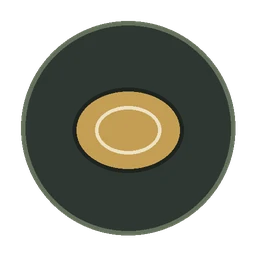

Plataforma
Discord e jogo, uma coisa só.
Uma plataforma construída para a Vulpus: o que você faz em um lugar conta no outro.
Ponte
O chat do servidor aparece no Discord. E o contrário também.
Vincule a conta uma vez e Caudas, XP e conversa passam a ser os mesmos nos dois lugares.
No jogo
<luma> alguém tem ferro sobrando?
pedro entrou no jogo
<pedro> tenho, passa na base
No Discord
lumaalguém tem ferro sobrando?
pedro entrou no jogo
pedrotenho, passa na base
Exemplo ilustrativo.

Economia
As Caudas.
A moeda da Vulpus. Cada Cauda vem de uma conversa, de uma construção, de um dia em que você apareceu.
Como ganhar
No
/daily, na pergunta do dia, nas missões e nos drops do chat: de vez em quando aparecem Caudas perdidas, e quem pegar primeiro leva. Aos sábados, em dobro.Onde gastar
Nas figurinhas e nos blocos da loja decorativa. Nada que dê vantagem no jogo.
Convites
/convidargera seu link pessoal. Quando o amigo chega ao nível 3 com a conta vinculada, os dois ganham Caudas.
Progressão
Do Filhote às Nove Caudas.
O nível vem do XP que você ganha conversando, jogando e participando, no Discord e no Minecraft. Cada marco muda o seu rank.
- Nível 0Filhote
- Nível 5Raposinha
- Nível 10Raposa Andarilha
- Nível 15Raposa Lunar
- Nível 20Raposa de Nove Caudas
Todo dia
Três missões, um bônus.
- Converse no servidor
- Acerte uma pergunta do
/quiz - Reaja a 6 mensagens
Tem ainda /quiz e /forca de Minecraft para passar o tempo.
Clãs
Bases, bandeiras e guerras.
Os clãs têm base, bandeira e histórico, e podem entrar em guerra.
0 clãs ativos · 0 em guerra agora
- carregando…
Segurança
Moderação que não dorme.
Tickets, registro de casos, automod e proteção contra raids, inclusive de apps externos.
Decisões importantes da equipe viram transparências no mural, e quem for punido vê o próprio histórico, com o motivo, na conta.
O caminho
O que já está aceso, e o que vem.
Já aceso
- Servidor Bedrock com addons próprios: menu, casas, TPA, RTP, caçadas e spleef
- Clãs com bases e bandeiras, guerras e histórico
- Ponte de chat e contas vinculadas entre Discord e jogo
- Kiza com IA, memória e humor, assistente do servidor
- Caudas, níveis, ranks, missões, quiz e figurinhas
- Kitsune por PIX, doações com metas e Toca Kitsune
- Convites, placares automáticos e proteção contra raids
- Perfis de jogador, rankings, enquetes e mural públicos, aqui neste site
No horizonte
- Figurinhas épicas e lendárias, e trocas entre membros
- Eventos sazonais e chefões
O que está nesta coluna ainda não existe. Entra aqui em cima quando estiver pronto.